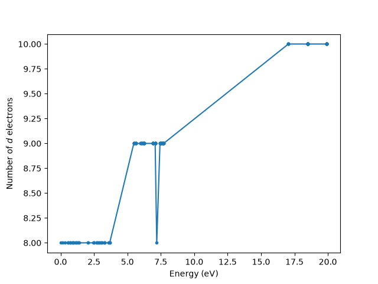

Note
Go to the end to download the full example code.
Charge-transfer energy for NiO
This example follows the Anderson impurity model for NiO XAS example and considers the same model. This time we outline how to determine the charge transfer energy in the sense defined by Zaanen, Sawatzky, and Allen [1]. That is, a \(d^{n_d} \rightarrow d^{n_d + 1} \underline{L}\) transition in the atomic limit, after considering Coulomb interactions and crystal field. Although this can be determined analytically in some cases, the easiest way is often just to calculate it, as we will do here.
import numpy as np
import matplotlib.pyplot as plt
import edrixs
from edrixs import FockBasisSpec
Determine eigenvectors and occupations
The first step repeats what was done in Ground state analysis for NiO but removes the hybridization between the impurity and bath states.
emat_i[:norb_d, norb_d:(norb_d + nbath*norb_d)] = 0
emat_i[norb_d:(norb_d + nbath*norb_d), :norb_d] = 0
backend = 'scipy'
hmat_i = edrixs.build_op(emat_i, umat_i, basis_i, backend=backend)
eval_i, evec_i = edrixs.ed(hmat_i, shift=shift, num_evals=len(basis_i), backend=backend)
eval_i = eval_i - eval_i.min()
nd_expect = np.sum(evec_i.conj() * (O @ evec_i), axis=0).real
/home/runner/micromamba/envs/build-env/lib/python3.12/site-packages/edrixs/scipy_backend/scipy_backend.py:98: UserWarning: The problem size 190 minus the constraints size 0 is too small relative to the block size 190. Using a dense eigensolver instead of LOBPCG iterations.No output of the history of the iterations.
eigenvalues, eigenvectors = lobpcg(
/home/runner/micromamba/envs/build-env/lib/python3.12/site-packages/edrixs/scipy_backend/scipy_backend.py:98: UserWarning: The problem size 190 minus the constraints size 0 is too small relative to the block size 190. Using a dense eigensolver instead of LOBPCG iterations.No output of the history of the iterations.
eigenvalues, eigenvectors = lobpcg(
Energy to lowest energy ligand orbital
Let’s plot the \(d\)-electron count of each eigenstate against its energy.
fig, ax = plt.subplots()
ax.plot(eval_i, nd_expect, '.-')
ax.set_xlabel('Energy (eV)')
ax.set_ylabel('Number of $d$ electrons')
plt.show()

With the hybridization turned off, the impurity and bath states no longer mix, so every eigenstate has an (almost) integer \(d\) count. The charge transfer energy is the energy to go from the \(d^8\) ground state to the lowest \(d^9\underline{L}\) state:
GS_energy = min(eval_i[np.isclose(nd_expect, 8)])
lowest_energy_to_transfer_electron = min(eval_i[np.isclose(nd_expect, 9)])
E_to_ligand = lowest_energy_to_transfer_electron - GS_energy
print(f"Energy to lowest energy ligand state is {E_to_ligand:.3f} eV")
Energy to lowest energy ligand state is 5.479 eV
Diagonalizing by blocks
When working on a problem with a large basis, one can take advantage of the
lack of hybridization and separately diagonalize the impurity-plus-core and
bath states. Keeping the filled core with the impurity retains its energy
and any initial core interactions. Each block Hamiltonian is built from the
relevant sub-blocks of emat_i and umat_i together with a
FockBasisSpec fixing that block’s occupancy. The
blocks are small, so we use the dense backend.
core_start = (nbath + 1) * norb_d
norb_c = emat_i.shape[0] - core_start
d_core = np.r_[0:norb_d, core_start:emat_i.shape[0]]
emat_d = emat_i[np.ix_(d_core, d_core)]
umat_d = umat_i[np.ix_(d_core, d_core, d_core, d_core)]
L_block = slice(norb_d, 2 * norb_d)
energies = []
for n_ligand_holes in [0, 1]:
basis_d = FockBasisSpec.from_args(norb_d, nd + n_ligand_holes, norb_c, norb_c)
Hd = edrixs.build_op(emat_d, umat_d, basis_d, backend='dense')
e_d = edrixs.ed(Hd, shift=shift, num_evals=1, backend='dense')[0][0]
basis_L = FockBasisSpec.from_args(norb_d, norb_d - n_ligand_holes)
HL = edrixs.build_op(emat_i[L_block, L_block], None, basis_L, backend='dense')
e_L = edrixs.ed(HL, num_evals=1, backend='dense')[0][0]
energies.append(e_d + e_L)
print("Energy to lowest energy ligand state (block diagonalization) is "
f"{energies[1] - energies[0]:.3f} eV")
Energy to lowest energy ligand state (block diagonalization) is 5.479 eV
Footnotes
Total running time of the script: (0 minutes 0.099 seconds)